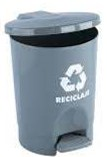

Papel escrito, impreso y roto, que no contenga clips ni ganchos metálicos. No debe estar sucio con otros materiales como grasa, sustancias, alimentos u otras mezclas diferentes que lo contaminen, es preferible que el papel no esté muy arrugado.
Residuos ordinarios, esdecir, que no se pueden reciclar. Papel: carbón, mantequilla, aluminio, higiénico, de cocina, celofán; pañuelos; toallas higiénicas; servilletas utilizadas; plastificados; metalizados, icopor, chicles y residuos de barridos
Envases de bebidas no retornables, vasos desechables, bolsas plásticas, demás recipientes plásticos y que estén vacíos
Residuos orgánicos como poda de árboles o plantas, hojas secas y residuos de alimentos o similares antes y después de la preparación.
Riesgo biológico. Esta caneca se debe ubicar únicamente en los laboratorios, consultorios y enfermería. Se depositan materiales de curación, guantes, gasas, algodones, entre otros. Además, residuos orgánicos o inorgánicos, corrosivos, tóxicos o inflamables
Colombia cuenta con la Política Nacional para la Gestión Integral de Residuos Sólidos con la cual se busca adoptar medidas encaminadas hacia la prevención en la generación y disposición final de residuos, la minimización de aquellos que van a sitios de disposición final, fomentando la promoción de la reutilización, aprovechamiento y tratamiento de residuos sólidos, asi mismo evitar la generación de gases de efecto invernadero.
Para lograr lo anterior se requiere mejorar la cultura ciudadana, la educación e innovación en la gestión integral de residuos sólidos para incrementar los niveles de separación en la fuente, aprovechamiento y transformación, tratamiento y comercialización de los residuos susceptibles de aprovechamiento.